Chapter 7: Already Autonomous States
The Subordinate Alliance was first met there ("will do in future"): the Rajput alliances after 1803-05 and Travancore's SA of 1805 after the Nair mutiny; also Tipu 82-99's French link that alarmed the British.
| Year | Paper | Topic | Answer |
|---|---|---|---|
| 1999 | Prelims | Governor General who kept the British flag flying high vs | (A) Warren Hastings |
| 2018 | Prelims | Which does NOT apply to Subsidiary Alliance | (C) Secure fixed income for Company |
| 2021 | Prelims | Which statement does NOT apply to Wellesley's SA | (C) To secure a fixed income for the Company |
| 2018 | Prelims | Prelims 2018 | (B) Only 2 |
| 2020 | Prelims | Prelims 2020 | (D) he wanted to train British civilians for administrative purpose in India |
| 2021 | Prelims | Prelims 2021 | (D) he wanted to train British civilians for administrative purpose in India |
The Subsidiary Alliance was control without annexation: Indian States kept the flag, the EIC took the army and Foreign Policy.
Read it like a film first. Then go to the notes: every fact below is expanded there.
Story spine: Money rules the chapter: high war expenditure produced the ban on conquest (1784), Wellesley 98-05 got round the ban with the Napoleon threat and the Subsidiary Alliance (control without annexation), and high war expenditure again got him recalled.
| Character | Role in the story | Hook |
|---|---|---|
| Richard Wellesley 98-05 | Governor General of Bengal 1798-1805; empire builder; founded Fort William College 1800 | The Empire Builder |
| Arthur Wellesley | Royal Army officer, 33rd Regiment of Foot; Seringapatam 1799, Assaye 1803 | The Royal Soldier |
| Henry Wellesley | Handled EIC administration and diplomacy; imposed the full SA on Awadh in 1801 | The Diplomat |
| Napoleon | Attacked Egypt in 1798; the 'there but not real' threat | The Overhyped Threat |
| Tipu 82-99 | Mysore ruler in contact with Napoleon; killed at Seringapatam 1799 | The Suspected Ally |
| Dupleix 42-54 | French root of the SA: Hyderabad 1751 with Bussy | The French Pioneer |
| Clive 57-67 | British root: mini SA at Awadh in ToA 1765 | The British Pioneer |
| John Shore 93-98 | Removed Wazir Ali from the Nawabship in return for the 1798 subsidy offer | The Obliging Governor |
| Sadat Ali Khan II | Uncle who offered Rs 76 lakh, then defaulted; Awadh lost half in 1801 | The Defaulter |
| Bajirao II 96-18 | Peshwa beaten by Yashwantrao Holkar; signed Bassein, December 1802 | The Fugitive Peshwa |
| Appa Sahib | Bhonsle of Nagpur; signed in 1816 to win the regency fight | The Regency Claimant |
| Wajid Ali Shah | Nawab of Awadh accused of maladministration; State annexed 1856 | The Starkest Example |
| Md Ali 52-95 | EIC's loyal ally; Carnatic annexed six years after his death | The Loyal Ally |
| Key term | In plain words |
|---|---|
| Subsidiary (Subordinate) Alliance | A treaty that looks like an alliance but puts one party's rights below the other's: the EIC on top, the Indian State below |
| Pitt's India Act 1784 | The Act that banned conquest: no offensive war without the Court of Directors or the Board of Control; war allowed only in defence |
| British Resident | The EIC's man stationed at the Indian ruler's court |
| Subsidy (Def BD) | The annual payment by the Indian State for the EIC army; it is the State's defence budget, but its size is decided by the EIC |
| External sovereign functions (D, C, FA) | Defence, Communications and Foreign Affairs, taken by the EIC |
| Domestic sovereign functions | Home, Finance, Admin, Health and the like, which stayed with the Indian king |
| Symbolic sovereignty | The throne and title that stayed with the Indian king |
| Foreign Policy (in the SA) | War and peace, diplomacy, defence budget and foreign trade, all taken by the EIC |
| Company's Army / King's Army | The EIC's own private military / the British State's Royal regiments, whose cost the EIC had to reimburse |
| Factionalism | Rival groups fighting over who rules (the teacher's example: who will be regent of Nagpur) |
| Ceded Districts | Half of Awadh (the Doab, Gorakhpur, Rohilkhand) annexed in 1801; full province status in 1836 as NWP |
| Divide and Rule | Setting groups apart so they cannot unite against the EIC; the SA did this at the level of a whole subcontinent |
Remember it as SA = control without annexation: the EIC took the army and Foreign Policy; the Indian State kept the flag.
| Year and paper | What was asked | The answer or trap | Class answer and board marks | Bank check | Where in this chapter |
|---|---|---|---|---|---|
| Prelims 2018 | Institution and founder pair: Fort William College (asked alongside Sanskrit College Banaras and Calcutta Madarsa) | Fort William College, Calcutta, 1800: Wellesley 98-05 | PYQ 4. F on pair 1 (Sanskrit College, William Jones) and on pair 3 (Fort William College, Arthur Wellesley); (b) Only 2 ticked. Sanskrit College Banaras was founded by Jonathan Duncan (1791) | Matches: answer (b) Only 2 | 1. Who were the Wellesleys; 8. PYQ drill |
| Prelims 2020 and Prelims 2021 | The purpose for which Fort William College was established | To train British civil servants in Indian languages, laws and customs before posting them to the districts | PYQ 5 (Prelims 2020 only). Answer (d) printed with the question. The Prelims 2021 repeat is not shown on the slides | Matches: answer (d) in both the 2020 and 2021 entries | 1. Who were the Wellesleys; 8. PYQ drill |
| Prelims 1999 | "At a time when empires in Europe were crumbling before the might of Napoleon, which one of the following Governors General kept the British flag flying high in India?" | (c) Lord Wellesley 98-05. Trap: two Governors General are named Hastings. Warren Hastings 73-85 is pre-Napoleon; Francis Hastings 13-23 (Lord Hastings) is post-Napoleon. Both are wrong | PYQ 1. (c) ticked; codes beside every option; "1799-1815" against Napoleon; "high" underlined; "SA" over "My" and "Ma" | Bank answer key is wrong: the key says (a) but the bank's own explanation, the slide and the handout all say (c). Use (c). | 2. Pitt's India Act and the Napoleon threat; 8. PYQ drill |
| Prelims 2018 and Prelims 2021 (the same question in both years) | Which statement does NOT apply to the Subsidiary Alliance? | The false option was (c) "Secure a fixed income for the Company." The subsidy was earmarked for the army, not surplus income. True options: maintain a large standing army, defend against Napoleonic danger (option b), establish British paramountcy | PYQ 2 (2018) and PYQ 3 (2021). T, T, F, T on (a) to (d); tags "BALI" and "FREE of ARMY" on (a), "THREAT: REAL or UNREAL" on (b), "LOSS of D, C, FA" on (d); "SUPREMACY" under (d) | Matches: answer (c) in both years | 4.4 The PYQ on SA features; 2. The threat was there but not real; 8. PYQ drill |
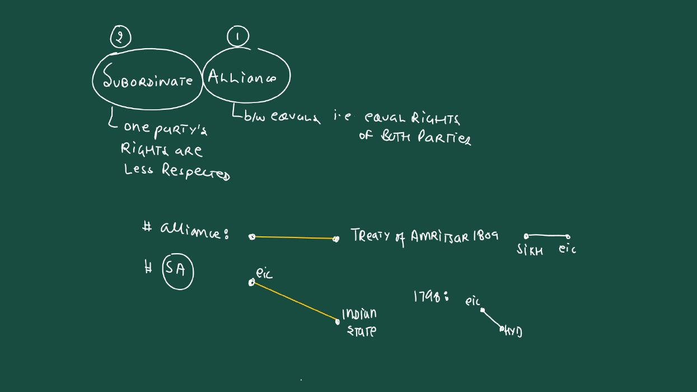
| Word (the teacher's order) | Meaning on the board | Picture on the board | Example on the board |
|---|---|---|---|
| 1. Alliance | Between equals, that is, equal rights of both parties | A level line between two dots | Treaty of Amritsar 1809: Sikh and EIC on the same level |
| 2. Subordinate | One party's rights are less respected | A line sloping down from the EIC to the Indian State | 1798: EIC above, Hyderabad (HYD) below |
| Brother | Role |
|---|---|
| Richard Wellesley 98-05 | Governor General of Bengal from 1798 to 1805. He was joined in India by both his brothers, Arthur and Henry Wellesley. An empire builder |
| Henry Wellesley | Handled the administration and diplomacy of the EIC |
| Arthur Wellesley | A military commander, but NOT an EIC officer: a commissioned officer in the British Royal Army |
| Force | What it was | Who paid |
|---|---|---|
| Company's Army | The EIC's own private military. Majorly Indian sepoys, but it also had European sepoys. Senior officers were always European, that is, British | Paid for by the EIC |
| King's Army (Royal Military) | The official British State's regiments sent to India to support the EIC | The EIC had to reimburse the British State for the cost of Royal troops deployed in India |
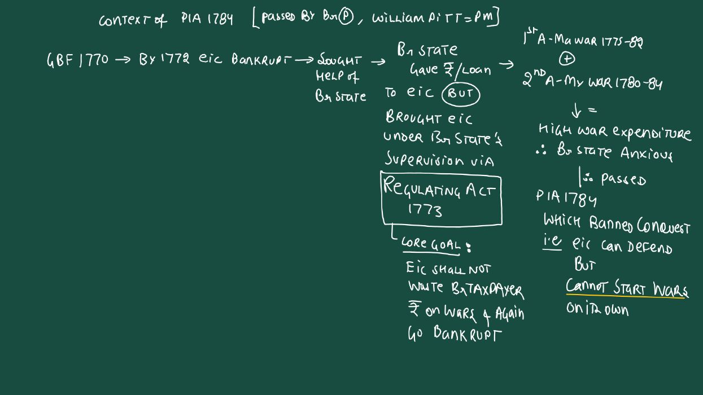
| Aspect | Detail |
|---|---|
| The ban | Pitt's India Act of 1784 had banned conquest. The Governor-General (GG) could not start an offensive war without the express command and authority of either the Court of Directors of the EIC or the Board of Control of the British State (discussed in a later chapter) |
| The exception | The GG had the right to enter war on grounds of defence |
| The reason | High war expenditure |
| The wars that drained Company finances | The Three Carnatic Wars (1746–63), the Battle of Buxar (1764), two Anglo-Mysore Wars (1767–69 and 1780–84) and the 1st Anglo-Maratha War (1775–82) |
| What Parliament mandated instead | Diplomacy rather than war, in the form of the Policy of Indirect Rule (PoIR) and maintaining a balance of power among Indian States, instead of pursuing direct conquest |
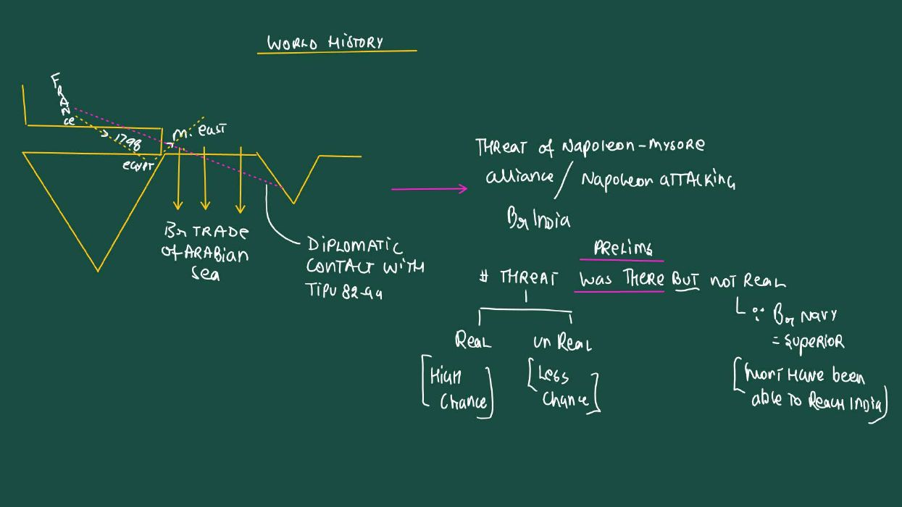
| Feature | French root: Dupleix 42-54 at Hyderabad, 1751 | British root: Clive 57-67's ToA 1765 at Awadh |
|---|---|---|
| Who | Dupleix 42-54, as Governor General of French Establishments in India (GG of the French EIC) | Robert Clive 57-67 |
| What he set up | The first mini or proto-form of the Subsidiary Alliance, at Hyderabad in 1751 | The mini Subsidiary Alliance planted at Awadh via the Treaty of Allahabad (1765) |
| The occasion | Salabat Jung 51-62 became Nizam of Hyderabad with French backing | The Treaty of Allahabad (1765) with Awadh |
| The army | A French force under Bussy was permanently stationed | An EIC army in Awadh |
| Who paid | Paid out in the form of Northern Sarkars revenues (and control) | Paid by subsidy from Awadh |
| The ruler's own army | Not stated in the handout | Size of the Nawab's controlled army reduced (not disbanded) |
| The man at court | A foreign adviser at court who would not just advise but establish indirect rule | A British Resident stationed |
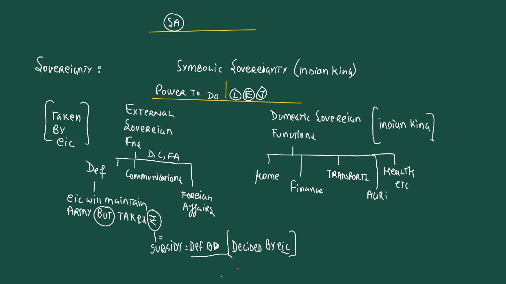
| Part of sovereignty | What it contains | Who holds it under the SA |
|---|---|---|
| Symbolic Sovereignty | The throne and the title | The Indian king |
| External Sovereign Functions: D, C, FA | Defence, Communications, Foreign Affairs | Taken by the EIC |
| Domestic Sovereign Functions | Home, Finance, Transport, Agri, Health etc. | The Indian king |
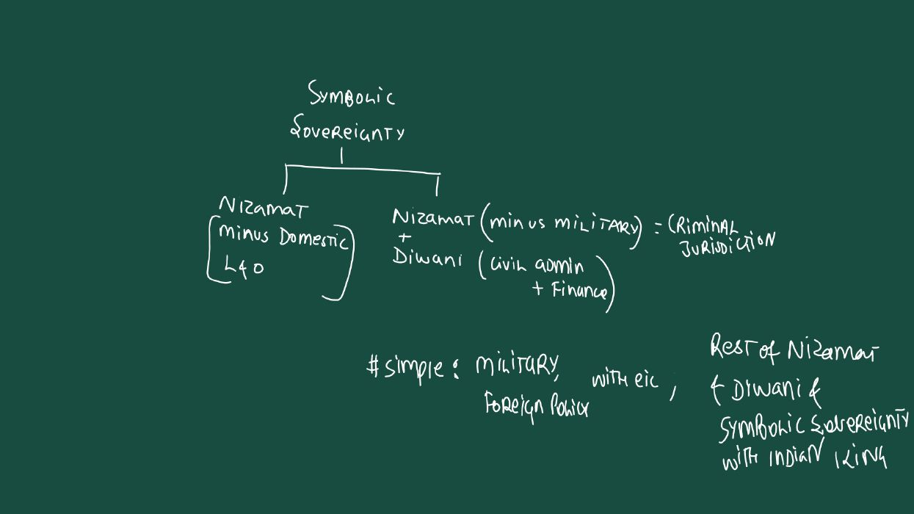
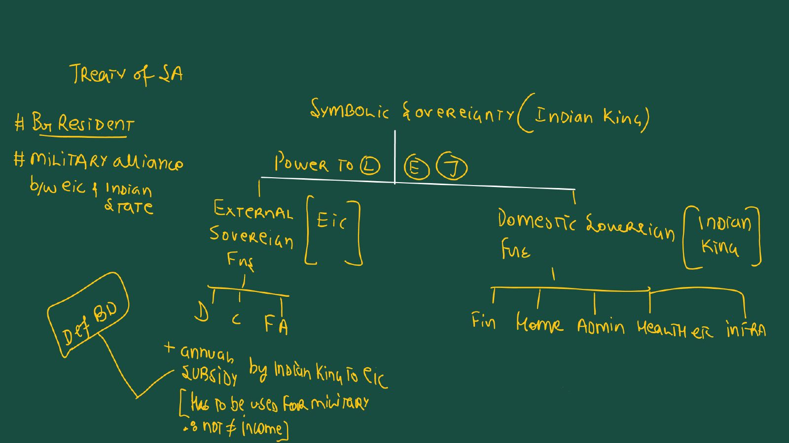
| Part of sovereignty (L15 slide 1) | Holder | Branches the teacher writes |
|---|---|---|
| Symbolic Sovereignty | The Indian king | The title and throne |
| External Sovereign Functions | The EIC | D (Defence), C (Communications), FA (Foreign Affairs) |
| Domestic Sovereign Functions | The Indian king | Fin (Finance), Home, Admin, Health etc, infra |
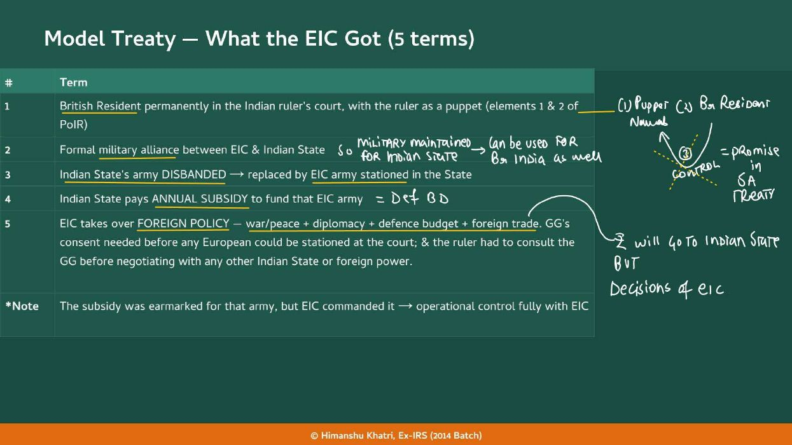
| # | Term | Fine print from the handout |
|---|---|---|
| 1 | A British Resident stationed permanently in the Indian ruler's court, with the ruler as a puppet | Elements 1 and 2 of PoIR, but not yet element 3: the British promised non-interference in internal affairs by the British Resident. This promise was seldom kept, and the British breached the treaty in many cases |
| 2 | A formal military alliance between the EIC and the Indian State | |
| 3 | The Indian State's own army was disbanded and replaced by an EIC-maintained army permanently stationed in the State | |
| 4 | The Indian State paid an annual subsidy to fund this EIC army | So technically this army is owned by the Indian State; the EIC only maintains it. But because of the 5th point, this ownership of the Indian State was lost |
| 5 | The EIC took over the Indian State's Foreign Policy | Decisions on war and peace, diplomacy, the defence budget and foreign trade. The GG's consent was needed before any European could be stationed at the court. The ruler had to consult the GG before negotiating with any other Indian State or foreign power. The subsidy, that is, the defence budget of the Indian State, was decided by the EIC |
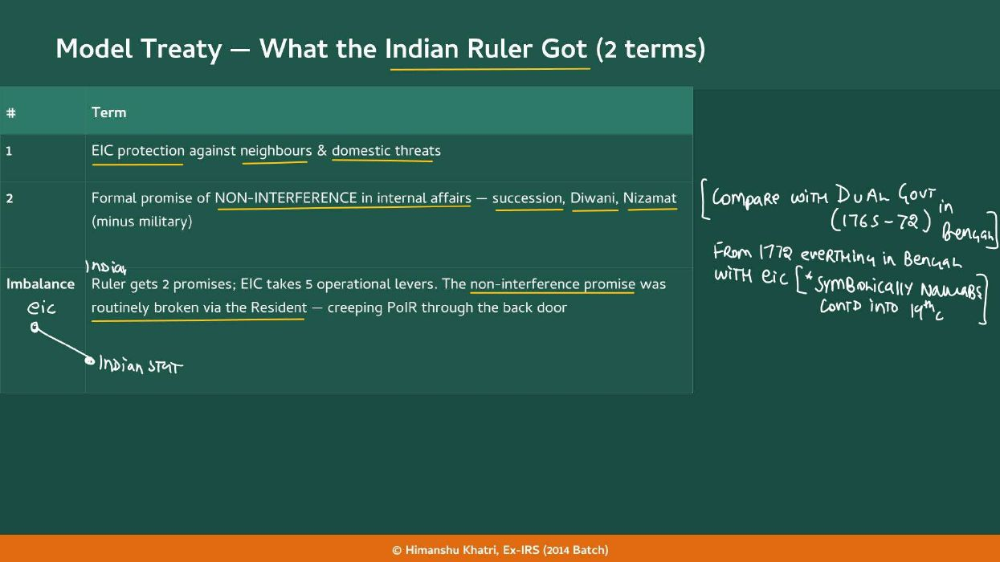
| # | Term |
|---|---|
| 1 | EIC protection against neighbours and domestic threats |
| 2 | A formal promise of non-interference in internal affairs: succession, Diwani, Nizamat (minus military) |
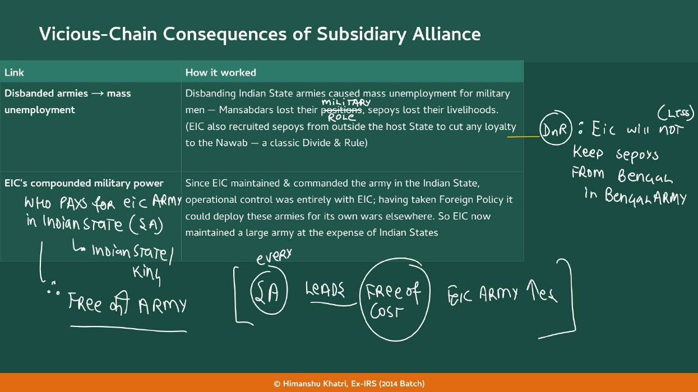
| # | Link | How it worked |
|---|---|---|
| 1 | Disbanded armies, so mass unemployment | Disbanding Indian State armies caused mass unemployment for military men: Mansabdars lost their positions (the teacher corrects this to "military role"), sepoys lost their livelihoods |
| 2 | The EIC's compounded military power at the host State's expense | The EIC maintained and commanded the army in the Indian State, so operational control was entirely with the EIC. Having taken over Foreign Policy, it could deploy these armies for its own wars elsewhere. The EIC could now maintain a large army at the expense of Indian States |
| 3 | High and rising subsidy, so Drain of Wealth | Subsidy payments were high to begin with and the EIC gradually increased its demands. The same money could have been used by the ruler for his own State's development. Instead there was Drain of Wealth |
| 4 | Tax hikes, so unrest | To pay the ever-rising subsidy, rulers had to raise taxes. High taxes made rulers unpopular, fuelled peasant resentment and created conditions for unrest |
| 5 | Maladministration accusations, so grounds for annexation | The EIC then accused Indian rulers of maladministration. In reality the ruler had no real power left |
| 6 | Territory in lieu of cash | When the subsidy could not be paid in cash, the EIC simply took territory as payment |
| 7 | Permanent loss of alliance-forming capacity | By losing Foreign Policy and military control, Indian States permanently lost the ability to form alliances against the EIC |
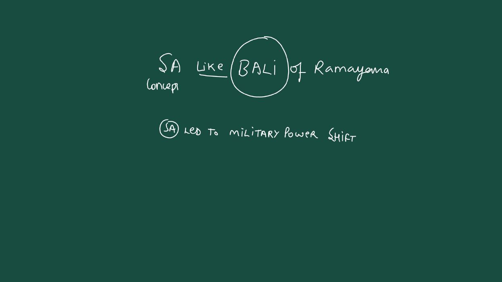
| # | Argument | What it meant |
|---|---|---|
| 1 | Protection against internal revolts | A guaranteed EIC army inside the palace walls was attractive insurance against rival claimants or mutinous nobles |
| 2 | Protection against external threats | Small States feared Maratha Chauth raids, Mysorean expansion or Rohilla incursions far more than the distant British |
| 3 | Better than annexation | The subsidy was, on paper, cheaper than annexation or a losing war against the EIC |
| 4 | Preservation of royal dignity | The ruler's title, court and ceremonial status were formally preserved. The flag of sovereignty flew, even after its substance had been handed over |
| 5 | For winning succession disputes and for protection from neighbours | In many cases rulers sought EIC help in succession disputes and for protection from other Indian States. The EIC used this as an opportunity by making military help conditional upon the Indian ruler signing the SA |
| # | Year | State (treaty) | Circumstances | Governor General |
|---|---|---|---|---|
| 1 | 1798 | Hyderabad | The Nizam signed first, to get EIC protection against the Marathas and Mysore | Wellesley 98-05 |
| 2 | 1799 | Mysore (Wodeyar dynasty) | Forced to sign after defeat in the 4th Anglo-Mysore War (1798–99). Tipu 82-99 was killed at the Battle of Seringapatam (1799); the Wodeyars were restored as a subsidiary throne | Wellesley 98-05 |
| 3 | 1801 | Awadh | Sadat Ali Khan II defaulted on the subsidy; Henry Wellesley imposed a full Subsidiary Alliance; half of Awadh annexed (details below) | Wellesley 98-05 |
| 4 | June 1802 | Gaikwad of Baroda (Treaty of Cambay) | Signed in exchange for EIC help in a Gaikwad succession dispute | Wellesley 98-05 |
| 5 | December 1802 | Peshwa Bajirao II 96-18 (Treaty of Bassein / Vasai) | Defeated by Yashwantrao Holkar, he fled and signed to regain the Peshwaship with EIC support | Wellesley 98-05 |
| 6 | 1803 | Scindia of Gwalior | Forced to sign during the 2nd Anglo-Maratha War (1803-05) | Wellesley 98-05 |
| 7 | 1803-05 | Jats, Rajputs, Bundelas (a group entry) | During the war the EIC forced them to sign Subsidiary Alliances. They had earlier paid Chauth and Sardeshmukhi to the Marathas; now they paid subsidy to the new regional power, the EIC | Wellesley 98-05 |
| 8 | 1805 | Travancore | Signed in exchange for EIC help in crushing a mutiny by Nair troops, who had revolted over non-payment of salary. The last SA signed under Wellesley 98-05 before his recall | Wellesley 98-05 |
| 9 | 1816 | Bhonsle of Nagpur (Treaty of Nagpur) | Appa Sahib finally signed, using EIC backing to win the faction fight over who would be regent | Francis Hastings 13-23 |
| 10 | 1818 | Holkar of Indore (Treaty of Mandsaur) | Forced to sign after decisive defeat in the 3rd Anglo-Maratha War (1817–19) | Francis Hastings 13-23 |
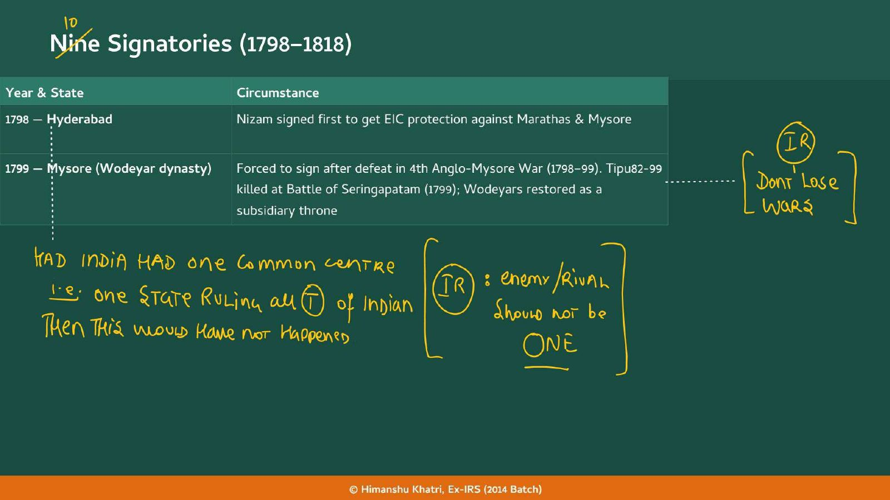
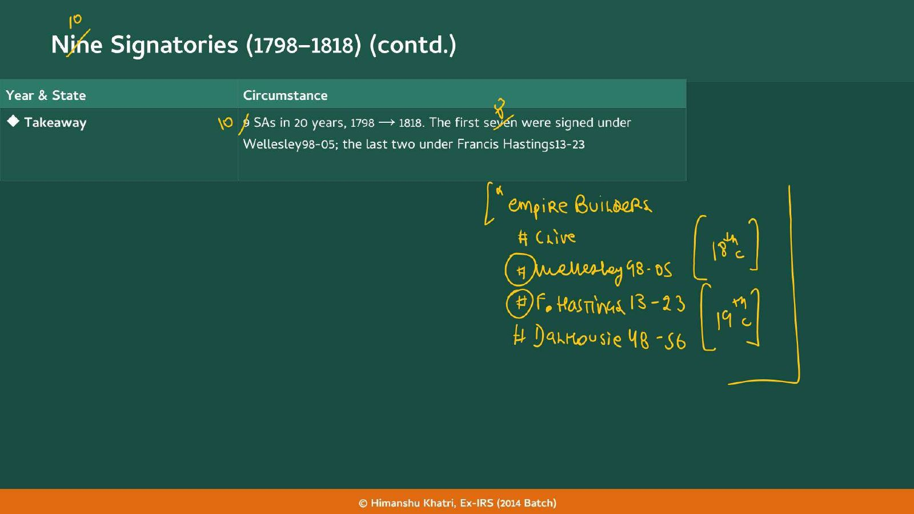
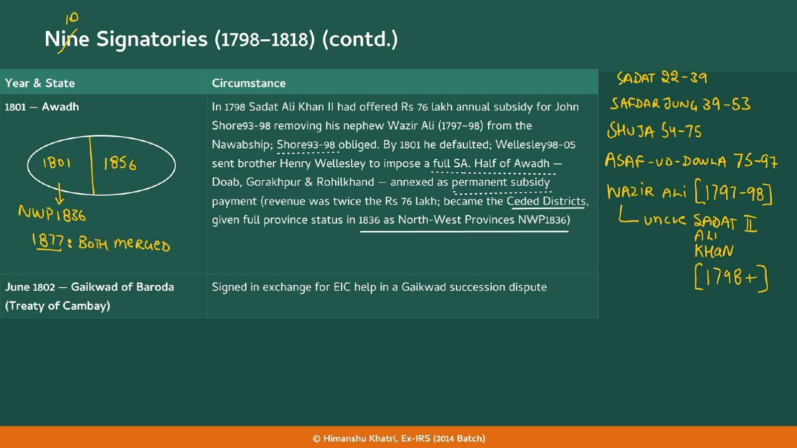
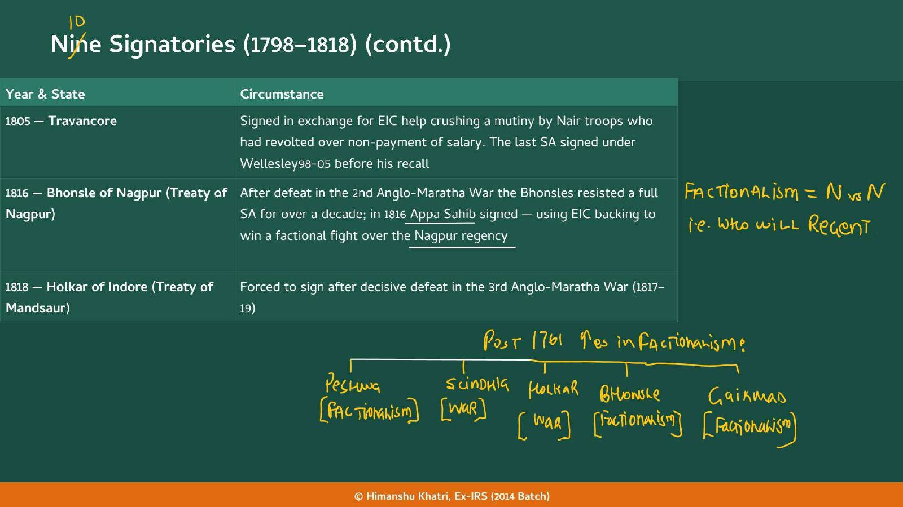
| Maratha power | Teacher's tag | The signatory entry that proves it |
|---|---|---|
| Peshwa (Bajirao II 96-18) | Factionalism | Defeated by Yashwantrao Holkar, fled and signed Bassein (Dec 1802) to regain the Peshwaship |
| Scindia (Gwalior) | War | Forced to sign during the 2nd Anglo-Maratha War (1803-05) |
| Holkar (Indore) | War | Forced to sign after decisive defeat in the 3rd Anglo-Maratha War (1817-19): Mandsaur 1818 |
| Bhonsle (Nagpur) | Factionalism | Appa Sahib won the Nagpur regency fight with EIC backing: Nagpur 1816 |
| Gaikwad (Baroda) | Factionalism | Signed for EIC help in a Gaikwad succession dispute: Cambay, June 1802 |
| When | Territory | Detail |
|---|---|---|
| 1799 | Mysore territory | Significant territory taken from Mysore after the 4th Anglo-Mysore War 1799 |
| Early 1801 | Half of Awadh (the Ceded Districts) | Annexed as permanent subsidy payment (the NWP 1836 territories, covered in section 6) |
| 1801 | Carnatic | Annexed on grounds of maladministration, six years after the death of Md Ali 52-95 (1752–1795), who had been the EIC's loyal ally since the 2nd Carnatic War 1749-54 |
| 1803–05 | 2nd Anglo-Maratha War: Bhonsle | Bhonsle of Nagpur lost significant territory, including Orissa (which Bhonsle had himself taken from Bengal in 1751) |
| 1803–05 | 2nd Anglo-Maratha War: Scindia | Scindia lost territory in Gujarat and all territory north of the River Yamuna, including Delhi |
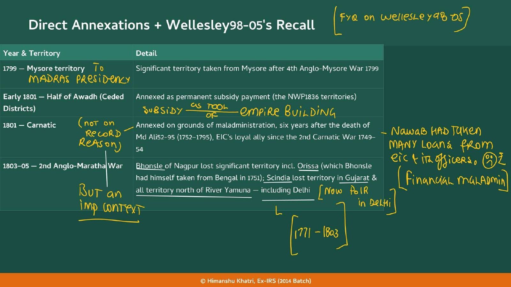
| Annexation | Reason on record | Teacher's added context |
|---|---|---|
| Mysore territory 1799 | 4th Anglo-Mysore War 1799 | Went to the Madras Presidency |
| Half of Awadh 1801 | Permanent subsidy payment (default) | Subsidy as tool of empire building |
| Carnatic 1801 | Maladministration, six years after Md Ali 52-95 died | Not the real record reason: the Nawab's many loans from the EIC and its officers (financial maladministration) |
| Orissa, Gujarat, Delhi side 1803-05 | 2nd Anglo-Maratha War | "Now PoIR in Delhi"; "[1771 - 1803]" (unclear) |
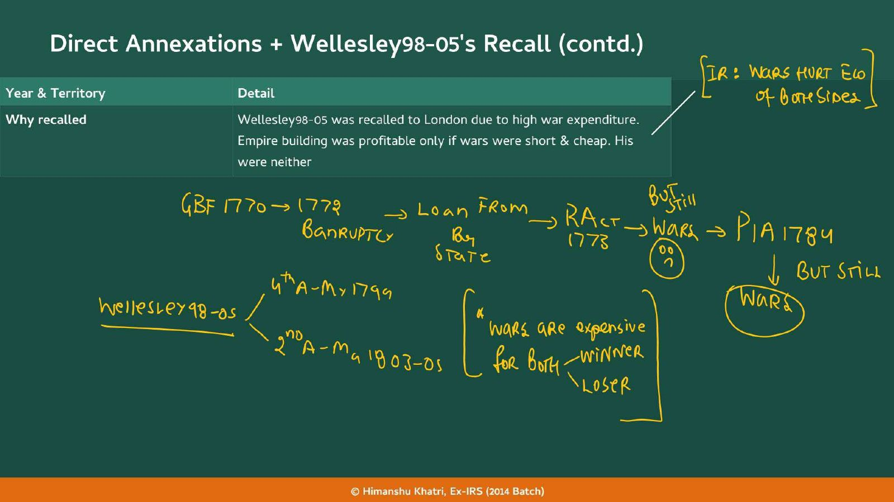
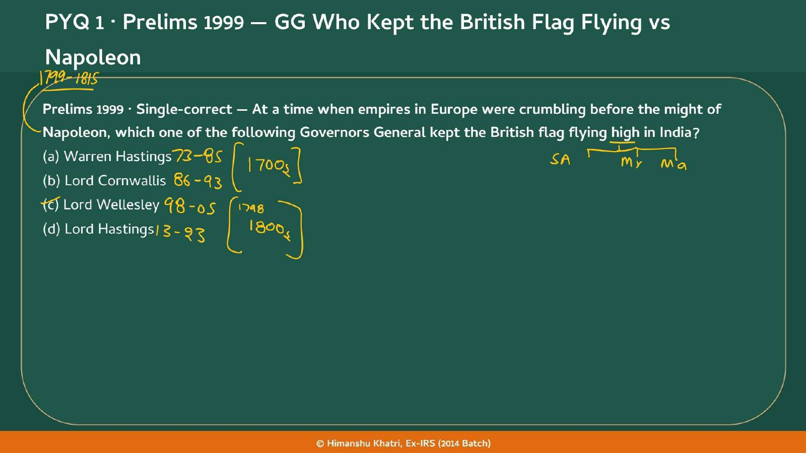
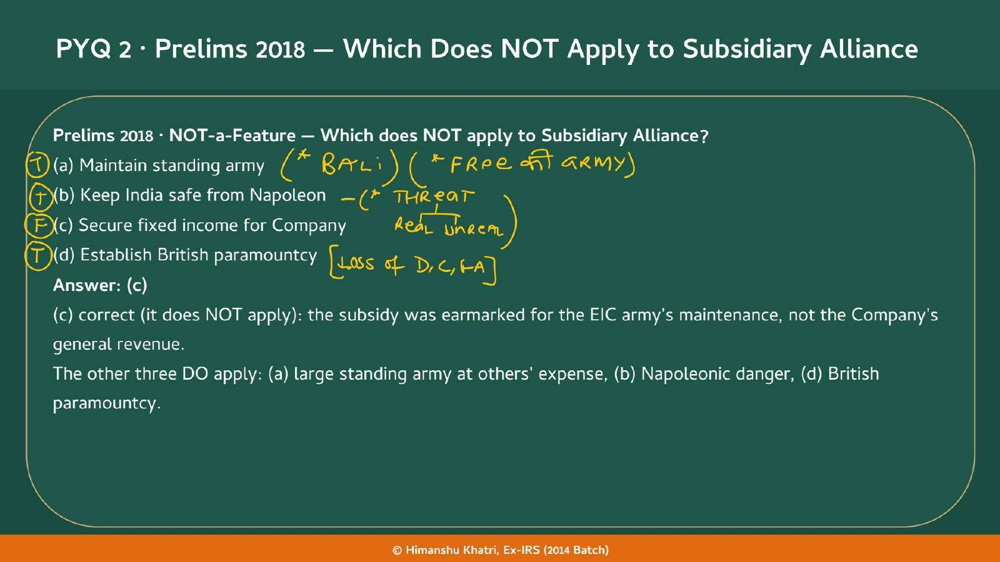
| Option (2018 wording) | Teacher's mark | His margin tag | What it points back to |
|---|---|---|---|
| (a) Maintain standing army | T | "BALI", "FREE of ARMY" | Bali analogy and the free army at the State's cost (5.1) |
| (b) Keep India safe from Napoleon | T | "THREAT", split REAL or UNREAL | The threat was there but not real (2.3) |
| (c) Secure fixed income for Company | F | none | Subsidy is the Def BD, earmarked for the army, not income (4.0b, 4.4) |
| (d) Establish British paramountcy | T | "LOSS of D, C, FA"; on slide 15 "[SUPREMACY]" | Defence, Communications, Foreign Affairs lost to the EIC (4.0): paramountcy = supremacy |
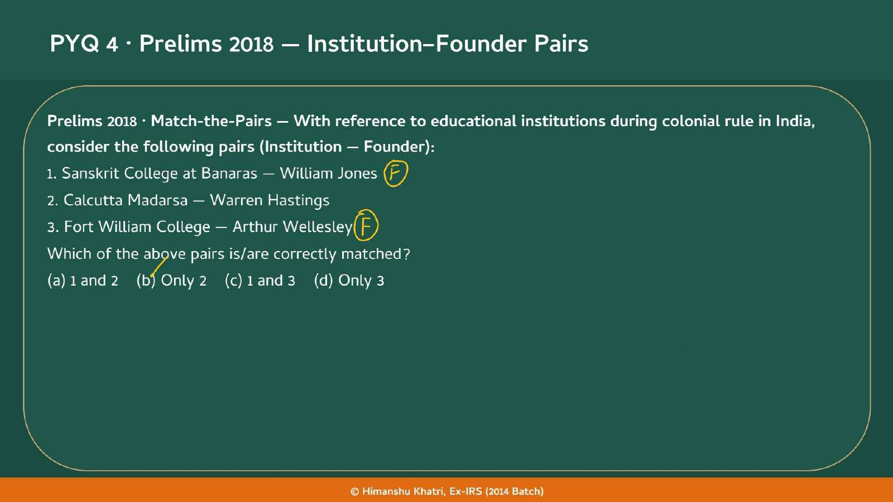
| Pair | Teacher's mark | Why |
|---|---|---|
| 1. Sanskrit College at Banaras, William Jones | F | Founded by Jonathan Duncan (1791) (slide 21); not in this chapter's handout |
| 2. Calcutta Madarsa, Warren Hastings 73-85 | (no mark; true) | The tick sits on (b) Only 2 |
| 3. Fort William College, Arthur Wellesley | F | Founded by Richard Wellesley 98-05, in 1800; Arthur was the Royal Army brother (1.1) |
| Year | What happened |
|---|---|
| 1739 | Treaty of Bassein (1739): the Marathas capture Bassein from the Portuguese; it comes under Peshwa control along with Salsette |
| 1746 | The Three Carnatic Wars begin (1746–63); they drain Company finances |
| 1751 | Dupleix 42-54 installs the first proto-form of the SA at Hyderabad: Salabat Jung 51-62 as Nizam, a French force under Bussy paid from the Northern Sarkars ★ |
| 1751 | Bhonsle takes Orissa from Bengal (lost to the EIC in 1803–05) |
| 1756 | 3rd Carnatic War (1756–63): from here till 1858 the Company's Army and the King's Army operate side by side |
| 1764 | Battle of Buxar |
| 1765 | Treaty of Allahabad: Clive 57-67's mini SA at Awadh; Dual Government in Bengal 1765-72 (teacher's comparison) ★ |
| 1767 | First Anglo-Mysore War (1767–69) |
| 1770 | GBF 1770 (teacher's board: the start of the chain to the EIC's bankruptcy) |
| 1772 | The EIC is bankrupt and seeks the help of the British State; from 1772 everything in Bengal is with the EIC (teacher's board) |
| 1773 | Regulating Act: loan to the EIC, but under the British State's supervision |
| 1774 | Most of Rohilkhand annexed by Awadh with EIC help; the rest becomes Rampur |
| 1775 | 1st Anglo-Maratha War (1775–82) |
| 1780 | 2nd Anglo-Mysore War (1780–84) |
| 1784 | Pitt's India Act bans conquest: no offensive war without the Court of Directors or the Board of Control ★ |
| 1796 | Napoleon's offensive phase (1796–1812) |
| 1797 | Wazir Ali is Nawab of Awadh (1797-98) |
| 1798 | Wellesley 98-05 becomes Governor General of Bengal; Napoleon attacks Egypt; Hyderabad signs the first Subsidiary Alliance ★ |
| 1798 | Sadat Ali Khan II offers Rs 76 lakh annual subsidy; Shore 93-98 removes Wazir Ali |
| 1799 | Siege of Seringapatam: Tipu 82-99 killed; Mysore (Wodeyars restored) signs the SA; Mysore territory annexed ★ |
| 1800 | Fort William College founded in Calcutta ★ |
| 1801 | Awadh: full SA imposed by Henry Wellesley; half of Awadh (Doab, Gorakhpur, Rohilkhand) annexed as the Ceded Districts ★ |
| 1801 | Carnatic annexed on grounds of maladministration ★ |
| 1802 | June: Gaikwad of Baroda signs the Treaty of Cambay |
| 1802 | December: Peshwa Bajirao II 96-18 signs the Treaty of Bassein (Vasai) ★ |
| 1803 | 2nd Anglo-Maratha War (1803–05); Battle of Assaye; Scindia of Gwalior signs the SA ★ |
| 1803 | 1803-05: Jats, Rajputs and Bundelas forced to sign; Bhonsle loses Orissa; Scindia loses Gujarat territory and everything north of the Yamuna including Delhi |
| 1805 | Travancore signs after the Nair mutiny: the last SA under Wellesley 98-05 before his recall ★ |
| 1808 | Arthur Wellesley fights Napoleon's army (1808 to 1815) |
| 1809 | Treaty of Amritsar 1809, Sikh and EIC: the teacher's example of an alliance between equals |
| 1816 | Bhonsle of Nagpur: Appa Sahib signs the Treaty of Nagpur |
| 1817 | 3rd Anglo-Maratha War (1817–19) |
| 1818 | Holkar of Indore signs the Treaty of Mandsaur: the tenth and last SA ★ |
| 1836 | The Ceded Districts get full province status as the North-West Provinces (NWP 1836) |
| 1853 | Hyderabad made to give Berar in lieu of subsidy |
| 1856 | Awadh annexed: Nawab Wajid Ali Shah accused of maladministration ★ |
| 1877 | The two halves of Awadh (the 1801 Ceded Districts and the 1856 remainder) are merged (board: "1877: Both merged") |
The Subordinate Alliance was first met there ("will do in future"): the Rajput alliances after 1803-05 and Travancore's SA of 1805 after the Nair mutiny; also Tipu 82-99's French link that alarmed the British.
The French root: Dupleix 42-54, Bussy at Hyderabad and the Northern Sarkars (1751); Md Ali 52-95, the EIC's ally since the 2nd Carnatic War; Royal troops from the 3rd Carnatic War.
The British root: the Treaty of Allahabad 1765 as a mini SA at Awadh; Dual Government 1765-72; PoRF; the board's GBF 1770 and Regulating Act 1773 chain.
The 4th Anglo-Mysore War and Seringapatam 1799, the Carnatic annexation of 1801, and what happened in Travancore after the 1805 SA.
The Treaty of Bassein 1802, the 2nd Anglo-Maratha War (Assaye 1803), the Treaty of Nagpur 1816 and the Treaty of Mandsaur 1818 in full.
The end of the vicious chain: Berar taken in 1853 and Awadh annexed in 1856 on grounds of maladministration.
Chauth and Sardeshmukhi, which the Jats, Rajputs and Bundelas paid before they paid subsidy to the EIC; the Maratha Confederacy that Bassein broke.
Read the question, answer in your head, then tap to check.
| What is written under "Subsidiary" on the title? | "Subordinate [SA]": read it as a Subordinate Alliance. |
| Alliance versus Subordinate (teacher's board)? | Alliance: between equals, equal rights of both parties. Subordinate: one party's rights are less respected. |
| The teacher's example of an alliance between equals? | Treaty of Amritsar 1809, Sikh and EIC. His SA example: 1798, EIC above Hyderabad. |
| Who were the three Wellesley 98-05 brothers? | Richard Wellesley 98-05 (GG of Bengal), Arthur (British Royal Army) and Henry (administration and diplomacy of the EIC). |
| Why was Wellesley 98-05 an empire builder? | Expanding the empire raised his profile among a nationalistic British public, useful for political ambitions back home. |
| Fort William College: where, when, why? | Calcutta, 1800; to train British civil servants in Indian languages, laws and customs before posting them to the districts. |
| Which regiment did Arthur Wellesley command? | The 33rd Regiment of Foot (infantry) of the British Royal Army; he was NOT an EIC officer. |
| The two European armies in India? | Company's Army (EIC's private military) and King's Army (Royal regiments, cost reimbursed by the EIC); side by side from the 3rd Carnatic War 1756-63 till 1858. |
| What did Arthur Wellesley say about the Marathas? | The most formidable enemy he ever faced; Assaye (1803) was the toughest fight of his career. |
| What did Pitt's India Act 1784 ban? | Conquest: no offensive war without the Court of Directors or the Board of Control; war only on grounds of defence. |
| Why did Parliament ban conquest? | High war expenditure: the Carnatic Wars, Buxar, two Anglo-Mysore Wars and the 1st Anglo-Maratha War had drained Company finances. |
| The board's chain to the Regulating Act 1773? | GBF 1770, EIC bankrupt by 1772, sought the British State's help, got a loan but came under State supervision via the Regulating Act 1773. |
| How did Wellesley 98-05 re-initiate conquest? | By overhyping the threat of a Napoleon and Tipu 82-99 alliance after Napoleon attacked Egypt in 1798. |
| Why was the Napoleonic threat "there but not real"? | Britain's navy was superior; a French fleet would have been destroyed before reaching India. French ships had already been burnt in the Mediterranean. |
| The teacher's one-line definition of the SA? | "Control without annexation": political domination without the cost, administrative burden and symbolism of full annexation. |
| The French root of the SA? | Dupleix 42-54 at Hyderabad, 1751: a French force under Bussy stationed with Salabat Jung 51-62, paid from the Northern Sarkars. |
| The British root of the SA? | Clive 57-67's Treaty of Allahabad 1765 with Awadh: EIC army paid by Awadh's subsidy, Nawab's army reduced, a British Resident. |
| Did Wellesley 98-05 invent the SA? | No. He initiated it as a policy: written treaty, Foreign Policy taken over, army disbanded, applied State by State. |
| What is a "policy" in the handout's words? | A pre-meditated formalised plan of action with pre-decided intent, reflected in a series of events executed in line with it. |
| The five terms the EIC got? | British Resident; formal military alliance; State's army disbanded and replaced by an EIC army; annual subsidy; Foreign Policy. |
| The two terms the Indian ruler got? | EIC protection against neighbours and domestic threats; a promise of non-interference in succession, Diwani and Nizamat (minus military). |
| What did "Foreign Policy" cover? | War and peace, diplomacy, defence budget and foreign trade; GG's consent before any European at court; consult the GG before negotiating with any State or power. |
| The board's split of sovereignty under the SA? | External functions (Defence, Communications, Foreign Affairs) taken by the EIC; domestic functions and symbolic sovereignty with the Indian king. |
| The legal logic of taking Foreign Policy? | The army was paid by the State's subsidy, so its deployment could legally rest with the ruler; taking war and peace closed that loophole. |
| The PoSA formula? | PoIR (informally) + PoRF + EIC military replacing the State's military + annual subsidy + loss of Foreign Policy. |
| Why is "a fixed income for the Company" not a feature of the SA? | The subsidy was earmarked only for maintaining the army; it was not surplus income. |
| Why did the EIC recruit sepoys from outside the host State? | To cut any loyalty to the Nawab if he revolted: Divide and Rule. |
| What does the Bali analogy stand for? | "SA led to military power shift": every SA increased the EIC's army free of cost while the Indian State lost its own. |
| Starkest example of the maladministration link? | Nawab Wajid Ali Shah of Awadh: accused of maladministration, State annexed in 1856. |
| Which territories made up "half of Awadh" in 1801? | The Doab, Gorakhpur and Rohilkhand: the Ceded Districts, later the North-West Provinces (NWP 1836). |
| How many SAs did the teacher count, and what did he strike? | Ten (struck Nine and 9), with 8 under Wellesley 98-05 (struck seven) and 2 under Francis Hastings 13-23; Jats-Rajputs-Bundelas is no. 7. |
| The teacher's tag for argument 5, winning succession disputes? | FACTIONALISM: rival groups fight over the throne or regency and the side seeking EIC help has to sign the SA. |
| The teacher's lesson written under the Hyderabad and Mysore rows? | Had India had one common centre (one State ruling all), this would not have happened; "Don't lose wars" (Mysore signed after losing the 4th Anglo-Mysore War). |
| The teacher's FACTIONALISM or WAR tags for the Marathas? | Factionalism: Peshwa, Bhonsle, Gaikwad. War: Scindia and Holkar. |
| The Awadh oval on the board? | Left half 1801 (arrow to NWP 1836), right half 1856; "1877: Both merged". |
| Awadh's Nawabs on the margin list? | Sadat 22-39, Safdar Jung 39-53, Shuja 54-75, Asaf-ud-Dowla 75-97, Wazir Ali [1797-98], then his uncle Sadat II Ali Khan [1798+]. |
| Scindia's date of signing as per the teacher? | 1803 or 1804, both inside the 2nd Anglo-Maratha War (1803-05). |
| The teacher's list of empire builders? | Clive 57-67 and Wellesley 98-05 (18th c); F. Hastings 13-23 and Dalhousie 48-56 (19th c). |
| Carnatic 1801: recorded reason and the teacher's context? | Recorded: maladministration, six years after Md Ali 52-95 died. Context: the Nawab had taken many loans from the EIC and its officers (financial maladministration). |
| Where did Mysore's territory go in 1799? | To the Madras Presidency. |
| Why was Wellesley 98-05 recalled, as the teacher's board puts it? | Wars are expensive for both winner and loser: the 4th Anglo-Mysore War 1799 and the 2nd Anglo-Maratha War 1803-05 ran up high war expenditure ("but still wars" after the 1773 loan and the 1784 ban). |
| Prelims 1999: how did the teacher sort the options? | 1700s: Warren Hastings 73-85, Cornwallis 86-93. 1800s (with 1798): Wellesley 98-05 (correct), Francis Hastings 13-23. Answer (c). |
| Prelims 2018 and 2021 NOT-an-SA-feature: the teacher's marks? | T on (a) standing army (Bali, free of army), T on (b) Napoleonic danger (threat real or unreal), F on (c) fixed income, T on (d) paramountcy (loss of D, C, FA). Answer (c). |
| Prelims 2018 pairs: which are wrong and why? | Pair 1 (Sanskrit College Banaras, William Jones): founded by Jonathan Duncan (1791). Pair 3 (Fort William, Arthur Wellesley): founded by Richard Wellesley 98-05 in 1800. Only pair 2 is right: (b). |
| Prelims 2020: why did Wellesley 98-05 found Fort William College? | To train British civilians for administration (d); not at the Board's request, not to revive oriental learning (the Asiatic Society), not to employ William Carey. |
Tap the card to flip.